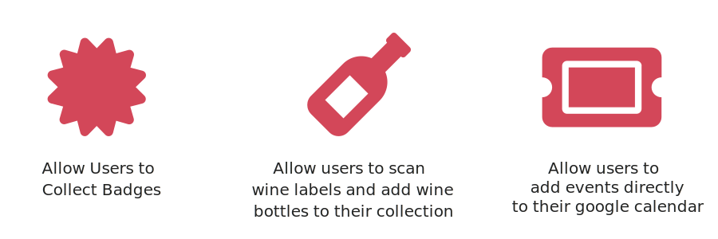

Wine is quickly becoming our parents beverage, and being our parents anything is almost always the kiss of death for consumer products. Millennials aren’t yet embracing wine consumption as many had predicted, and with baby boomers moving into retirement this is bad news for the wine industry as a whole.

Funded and sponsored by the NSF I-Corps program, we designed WineApp, a mobile applications which redefines the winery experience, by recommending wine events tailored to users interests and price range, and gamifying the experience by allowing users to collect badges and wines to earn promotional discounts, we are making wine cool again.
Lead Designer(UI/UX)
March 2018 - Present
Sherif Elmetwally, Astha Sharma, Sarah Ryu
Figma, Trello, Lucid Chart

WineApp recommends events to users based on their own specific interests and price range.
Collect badges and earn promotional discounts and special offers


Scan wines and add them to your collection
As the Lead UX Designer and Researcher on the team, I advocated for conducting user interviews, synthesis sessions and brainstorming sessions before arriving at solutions.
I led all the research & design activities with other students, created wireframes, high-fidelity designs, and interactive prototypes for user feedback & testing. I created the concept and led the presentation of the app during the NSF I-Corps showcase.
We looked into the market to see what applications currently involve wine, scanning, badges, or event planning
| Name | Vivino | Untappd | Eventbrite |
|---|---|---|---|
| Description | Vivino is the world’s largest online marketplace and most downloaded wine app. | Geosocial networking service and mobile application about beer. | Mobile application to find events |
| Platform | iOS, Android | iOS, Android | Web, iOS, Android |
| Feature Overview |
Allows users to scan wine labels.
Suggests wines to user Allows in app purchases |
Allows users to collect badges
Allows users to rate beer that they are drinking App suggests similar beers |
Allows users to buy tickets in app
Allows users to view a large variety of different events |
| Strength |
Massive database of wines
Complete information about most wines Contains reviews from users Great sorting functionality |
- Extensive database for beers
- Great community of beer enthusiasts - Linked with Uber |
Extensive database of events
Great sorting functionality |
| Weakness | Pricing varies so much from state to state that it is often inaccurate |
Poor user interface
Poor search functionality |
Buggy user interface on iOS
Poor search functionality |
We found that:
Therefore we hope to create an application which gamifies the winery experience, makes it easy for users to discover and purchase tickets for wine events, and for users to earn discounts and rewards through collecting badges.
To better understand young people’s feelings about wine we interviewed young people at two wine related events in New York City, Wine Riot, and, Smorgasbord, as well as interviewing friends and other students on campus.
We interviewed more than 40 people between the ages of 21 and 35. We found that:
To better guide our design and enable everyone on the team to empathize with our users, I further synthesized the interview results and came up with the following persona:
With our research findings and personas in mind, I invited our researchers and the other designer to brainstorm solutions together. I encouraged them to come up with as many ideas as possible without considering development or project scope at this stage.
We then went through the ideas and discussed their implementation feasibility. For example, allowing users to buy wine through the app would be ideal, but building out this feature would be too complex without some sort of API. Therefore allowing users to save and keep track of wines they like would be the best compromise.
Eventually we settled on the following core functionalities
Next I made a sitemap to view all of the application pages and key user interactions.
We created the following wireframes and began testing our application for feedback.
All users liked that they could push events to social media and add them to their google calendar
However most users had trouble finding events, since there was no page for them to directly search for them
Users did not have a consistent way to quickly visualize and track their wines and badges
Because of this we decided to create a discover page, where users could search for events or get events recommended to them directly
We also added a dashboard feature to the profile page, where the total number of the users badges and wines would be there to see.
Next I developed a styleguide to make the design process easier and quicker for everyone working on the project


With the goals I had for this iteration in mind, I moderated user feedback sessions with 10 users with different attitudes towards wine and different levels of interest in attending wine events in Hudson Valley (the wine region I used in my prototype). Here's a brief overview of the process:
Users were asked to rate their response on a scale from 1-5 (1 being the lowest and 5 being the highest) and then explain why they answered the way they did
I was able to gain a lot of positive from the prototype and the questionnaire, both from answers to the questionnaire and comments on what users thought could improve the design.
Since price is the most important thing to a lot of young people, many interviewees responded that the price of the event should be readily available on the discover page
Keeping on the topic of price we thought it would be beneficial to add price as one of the options users can manipulate while selecting events they are interested in.
So far, I've only made changes to the main functionalities based on user feedback. I'm still working on redesigning other screens & functionalities, and I'll post updates to them as soon as I finish the redesign.
Here's the latest prototype with some of my updated changes. Further changes to the design based on user feedback will be posted soon.